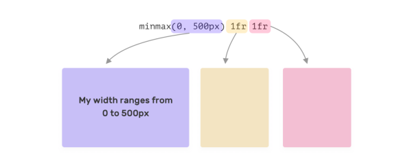

Discoveries #12 - Tutorials
Some great articles from CSS masters
This months discoveries it’s all about CSS tutorials. You will find some of the best articles of profound CSS masters like Ahmad Shadeed or Josh Comeau. All tips are vital to bring your CSS to the next level. Happy learning…
- CSS Variables 101
- Full-Bleed Layout Using CSS Grid
- A Deep Dive Into CSS Grid minmax()
- Create Diagonal Layouts Like It's 2020
- Using calc to figure out optimal line-height
- Drop-Shadow: The Underrated CSS Filter
- A Guide to the Responsive Images Syntax in HTML
- Centering in CSS
- How to trigger a CSS animation on scroll
- CSS Scroll Snap
CSS Variables 101
by Ahmad Shadeedhttps://ishadeed.com/article/css-vars-101/
CSS variables (or ‘custom properties’) are a huge helper to structure your CSS code and make it more maintainable. Ahmad shows us how to use their complete power.
Full-Bleed Layout Using CSS Grid
by Josh Comeauhttps://www.joshwcomeau.com/css/full-bleed/
Today it can be tricky to layout websites for small devices like smartphones and very large desktop screens. Josh shows us how to utilize CSS Grid on a classic 3-column layout the smart way.
A Deep Dive Into CSS Grid minmax()
by Ahmad Shadeedhttps://ishadeed.com/article/css-grid-minmax/
Ahmad again. In this tutorial he brings us a deeper look into the MINMAX() function, which is not easy to understand and to use.
Create Diagonal Layouts Like It's 2020
by Nils Binderhttps://9elements.com/blog/pure-css-diagonal-layouts/
Over 90% of all websites have an easy to understand rectangular layout, I guess. Nils shows us how to bring some disruptions into those layouts, by implementing diagonal sections, to make them less boring.
Using calc to figure out optimal line-height
by Jesús Ricartehttps://kittygiraudel.com/2020/05/18/using-calc-to-figure-out-optimal-line-height/
Text on the web must be easy to read and one of the probably most underrated options on styling text is the line height. Jesús shows us, how to calculate the line height for an optimal reading experience.
Drop-Shadow: The Underrated CSS Filter
by Michelle Barkerhttps://css-irl.info/drop-shadow-the-underrated-css-filter/
There are two shadow properties in CSS: box-shadow and drop-shadow. Michelle show us how to use the one or the other properly.
A Guide to the Responsive Images Syntax in HTML
by Chris Coyierhttps://css-tricks.com/a-guide-to-the-responsive-images-syntax-in-html/
Chris must not be missing in a list of CSS tutorials. As CSS has a bunch of tags and properties to show images in responsive layouts, he shows us how to use them effectively.
Centering in CSS
by Adam Argylehttps://web.dev/centering-in-css/
Centering elements can be a mess, but not for Adam who shows all possibilities with PRO’s and CON’s.
How to trigger a CSS animation on scroll
by Nick Ciliakhttps://coolcssanimation.com/how-to-trigger-a-css-animation-on-scroll/
Animations, cleverly used, give a page the finishing touches. But it is important to control them. Nick shows us how to achieve this using CSS and a bit JavaScript.
CSS Scroll Snap
by Ahmad Shadeedhttps://ishadeed.com/article/css-scroll-snap/
And finally once again Ahmad. In this tutorial he deals comprehensively with CSS’s scroll-snap feature.
You can interact with this article (applause, criticism, whatever) by mention it in one of your posts, which will also be shown here as a Webmention ... or you leave a good old comment with your GitHub account.
Webmentions
No Webmentions yet...
In case your blog software can't send Webmentions, you can use this form to submit me a mention of this article...


 There are many Mastodon instances out there.
Tell me yours and I will redirect you to the share dialog of your server:
There are many Mastodon instances out there.
Tell me yours and I will redirect you to the share dialog of your server:
Comments